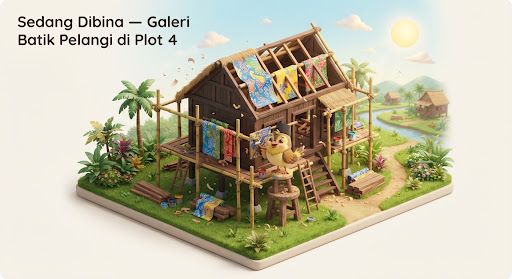
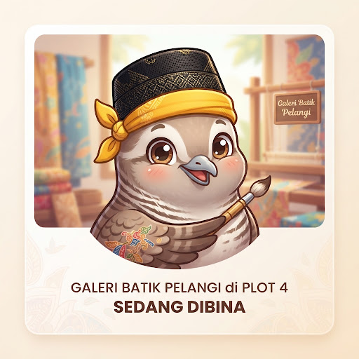

construction
Mod Tukang Cilik • Plot 4
🪙
Syiling Emas
450
🪵
Kayu Chengal
35
home_work
Sedang Dibina Sekarang
7 Minit Lagi

carpenter
Perancah Buluh & Chengal
speed
+25% Laju
handyman
Ketukan Aktif
Pak Pandai Kayu
schedule
Kemajuan Binaan Tapak
30%
10m
7m siap
🕊️ Cikgu Merbok jimatkan 3 Minit!
Siap pukul 10:42 Pagi

★
Cikgu Merbok (Pakar Seni)
Peneman
“Ketuk paku, sapu lilin! Galeri Batik kita hampir siap, Wira Adam! Bau kayu chengal wangi sungguh!”
palette
Tahap 1
Galeri Batik Pelangi
Silibus Tahun 1 Seni Visual (KSSR)
castle
+50
Kemakmuran
monetization_on
+15
Syiling / Jam
auto_stories
Unit 3
Canting Bunga
check_circle
150 Pewarna Asli & 50 Chengal
Lengkap ✓
psychology
Kuis Cilik: Bancuh Warna!
+10 XP
Sementara menukang, bantu Cikgu Merbok campur warna batik ini:
M
+
K
=
Ketik jawapan untuk sahkan bancuhan!